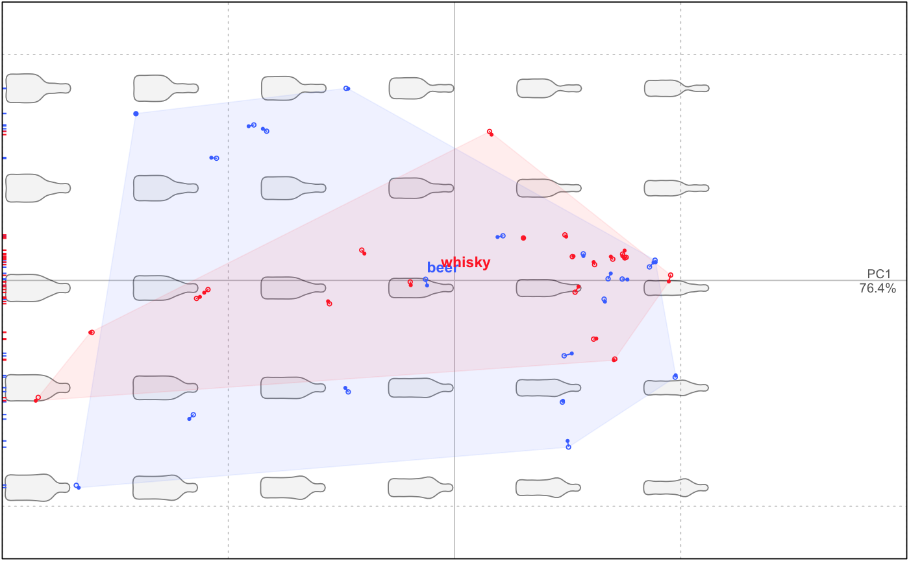

If you have paired individuals, i.e. before and after a treatment or for repeated measures,
and if you have coded coded it into $fac, this methods allows you to retrieve the corresponding PC/LD scores,
or coefficients for Coe objects.
get_pairs(x, fac, range)
| x | |
|---|---|
| fac | factor or column name or id corresponding to the pairing factor. |
| range | numeric the range of coefficients for |
a list with components x1 all coefficients/scores corresponding to the
first level of the fac provided; x2 same thing for the second level;
fac the corresponding fac.
bot2 <- bot1 <- coo_scale(coo_center(coo_sample(bot, 60))) bot1$fac$session <- factor(rep("session1", 40)) # we simulate an measurement error bot2 <- coo_jitter(bot1, amount=0.01) bot2$fac$session <- factor(rep("session2", 40)) botc <- combine(bot1, bot2) botcf <- efourier(botc, 12)#># we gonna plot the PCA with the two measurement sessions and the two types botcp <- PCA(botcf) plot(botcp, "type", col=col_summer(2), pch=rep(c(1, 20), each=40), eigen=FALSE)bot.pairs <- get_pairs(botcp, fac = "session", range=1:2) segments(bot.pairs$session1[, 1], bot.pairs$session1[, 2], bot.pairs$session2[, 1], bot.pairs$session2[, 2], col=col_summer(2)[bot.pairs$fac$type])